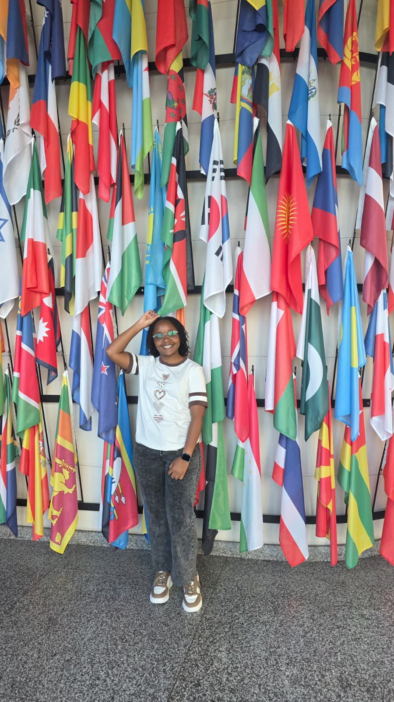

Copernicus Hubs and Institutions
A visit to EODC and UNOOSA, Vienna as part of our excursion to explore the institutions and infrastructure behind earth observation and space-based data in Austria and beyond. From high-performance computing systems to global disaster management programmes, the day offered a rare look behind the scenes of two very different but deeply connected worlds.